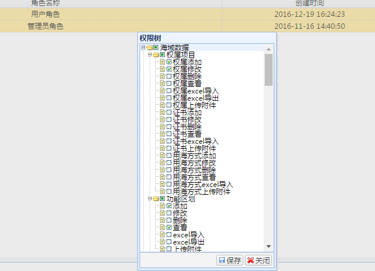
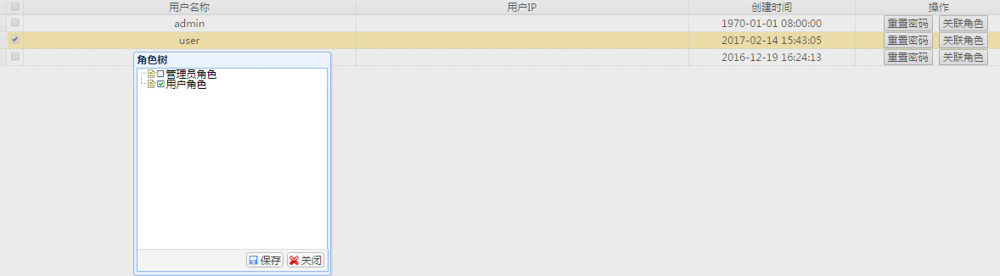
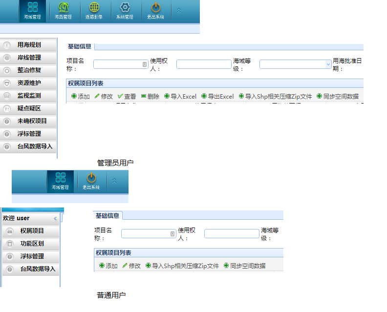
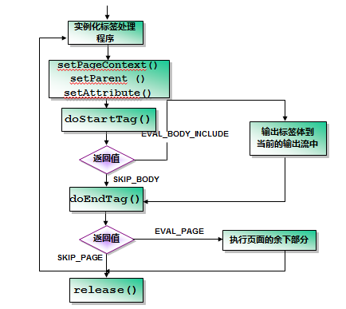

X市数据管理系统分析
X市数据管理系统功能:
- 对数据基本的操作，包括增、删、改、查
- 以图表的方式展示数据
- 附件的上传、下载
- Excel导入导出
- 具有地图模块显示二维地图，点击定位，根据导入的坐标定位到地图相应位置并显示与坐标相应的轮廓。
- 基础数据管理，可以增加基础数据(比如:工程级别、类型、施工状态等)，便于系统扩展。
- 用户权限管理，通过用户关联角色的方式管理用户的权限。
后台:使用了Spring,Spring MVC框架,
前台:jQuery,EasyUI,ArcGIS
数据库:使用的数据库为Oracle,与数据库的交互使用的是Spring JPA的实现和Spring JDBCTemplate,
值得注意的地方
Session保存常用对象
- session对象不仅保存了用户对象还直接保存了用户名,用户名很常用,因此这种做法可以节省大量的时间
|
|
自定义标签用于权限控制
最终目标
- 将每个用户划分到不同的角色，每个角色设置不同的权限，用以管理控制每个用户的权限
- 角色管理图

- 用户管理图

- 不同用户登陆的效果图

实现思路
建立一个Resource表,表每一项都是用户可以操作的动作每一项都包含一个自定义的权限标签ID。建立一张Role表,Role与Resource是多对多的关系,建立一张User表,User与Role也是
多对多关系。执行自定义标签，查询用户是否具有该标签的ID,使用JPA能够自动进行关联查询。因为EasyUI在节点关闭且该节点下没有子节点时，在展开时会向后台传递该节点ID以请求节点JSON数据,所以可以通过Resource表自关联实现数据的树形菜单。
- 使用自定义标签来进行权限控制,有权限则显示相应标签否则不显示标签
- privilege.xltd
|
|
- 标签类
|
|

基础数据类型扩展
一些基本的数据类型(比如图片格式、项目完成状态、项目等级)可能会随着用户的使用而修改，为了增加系统的扩展性，加入了基础数据类型管理这个功能。
实现思路
建立一张基础数据表,用一个字段(flag)标志不同的基础数据类型(海岛等级(island_grade)、图像数据类型(img_dataype)、所属海区(sea_area)),使用一个字段(value)表示显示的名称。对于可扩展的数据类型，从后台根据标志位(flag)查询出值后，放入前台的下拉框(combobox)中。
多级下拉框(combobox)
省下拉框选择后,市下拉框才有值,市下拉框选择后，县下拉框才有值。
实现思路
一级下拉框在页面初始化后，将类型传入后台获取该下拉框全部的值。由一级下拉框的选择事件触发ajax与后台交互,将一级下拉框选中的值的ID做为Pid(父类ID)、类型作为参数传入后台获取二级下拉框的所有项,多级下拉框与此同理。
一些不错的工具类
- CreateUserByAndDate根据session中保存的用户名来自动的添加数据库中的创建人、创建时间、更新人、更新时间
- EmptyUtil判断对象是否为空
感觉不好的地方
- 混用中英文命名
- 一些代码的组织不太好,比如Excel导入
|
|
- 修改官方的jar包。为了使用jotm管理分布式事务，但是spring-tx，4.2版本中已经废弃了jotm库。公司采取了将在jar包中加入jotm的java文件,使得jotm可以使用,这种方法为以后的开发、维护埋下了巨大的隐患。
- 用户体验较差,比如:查询、登陆无法回车执行,查看一条记录不能双击执行